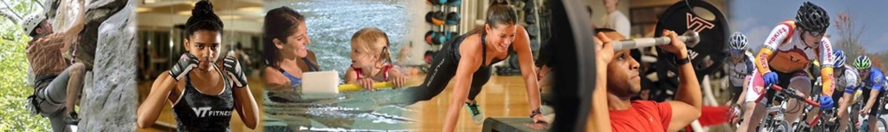

Recreational Sports| Virginia Tech
Recreational Sports at Virginia Tech offers a multitude of opportunites for students, faculty, and staff. Rec sports offers Group Exercise, Personal Training, Intramural Sports, Club Sports, Venture Out & so much more! Through Rec Sports you can you develop healthy lifestyles, friendships, and leadership skills through fun and competitive activity. 
You should be in good physical condition if participating in Intramural Sports. Please consult your doctor if you have any medical conditions that could be jeopardized by participation.
Recreational Sports is a department that falls directly under the Division of Student Affairs. Each and everyday, employees work to promote and postively increase the quality of life for everyone in the community. There are many different factors Rec Sports focuses on that promote the vision of a healthy lifestyle. Community outreach, cooking programs, and leadership opportunities are also incorportated.
This website will provide all of the necessary information abput Recreational Sports at Virginia Tech. It is a tool that will help anyone find anything about this department!